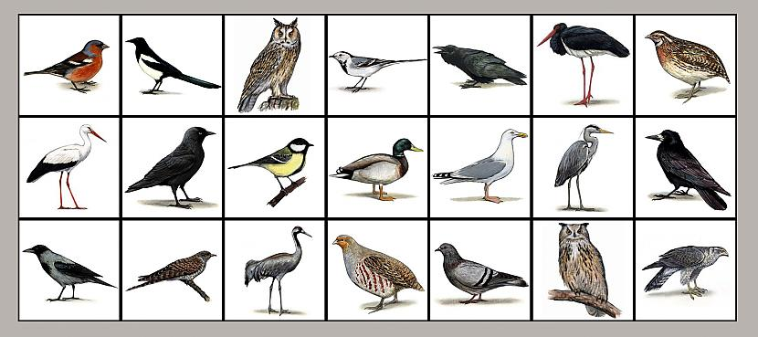

Īss raksturojums
Latvijas teritorijā konstatēta 371 putnu suga no 66 dzimtām, 22 kārtām. Apmēram 220 sugas Latvijā ligzdo, pārējās sastopamas ziemošanas vai migrācijas laikā vai kā maldu viesi. Ligzdojošās sugas nosacīti iedala nometniekos un gājputnos, bet gājputnus – tuvajos (ziemo Dienvideiropā vai Rietumeiropā) un tālajos (ziemo Āfrikā vai Indijā) migrantos. Pie nometniekiem pieder, piemēram, mednis (Tetrao urogallus), mežirbe (Bonasa bonasia), cekulzīlīte (Lophophanes cristatus), mājas zvirbulis (Passer domesticus). Pie tuvajiem migrantiem – dzērve (Grus grus), lauku cīrulis (Alauda arvensis), baltā cielava (Motacilla alba), mājas strazds (Sturnus vulgaris), pie tālajiem migrantiem – dzeguze (Cuculus canorus), lakstīgala (Luscinia luscinia), vālodze (Oriolus oriolus), mazais svilpis (Carpodacus erythrinus). Robeža starp šīm grupām ir izplūdusi, piemēram, daļa lielo zīlīšu (Parus major) un pelēko vārnu (Corvus cornix) ziemā aizceļo; daļa tuvo migrantu (piemēram, mājas strazdi, žubītes, Fringilla coelebs) siltākās ziemās var pārziemot Latvijā.
Informācija ņemta no:Nacionālās enciklopēdijas mājaslapas
Attēls ņemts no:Latvijas dabas mājaslapas